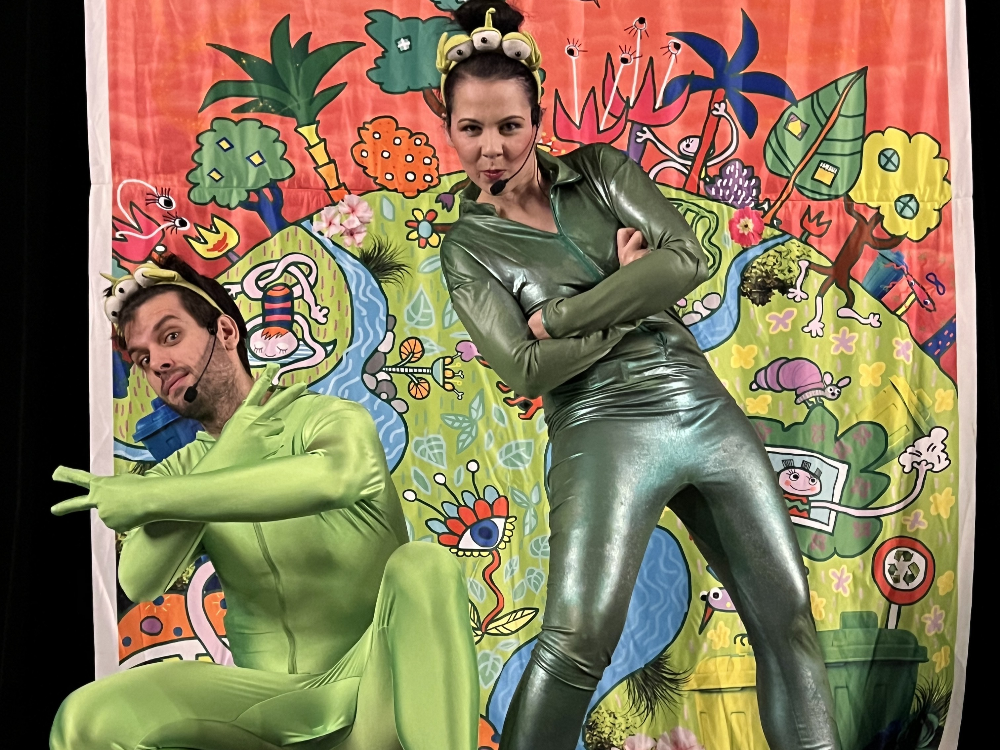
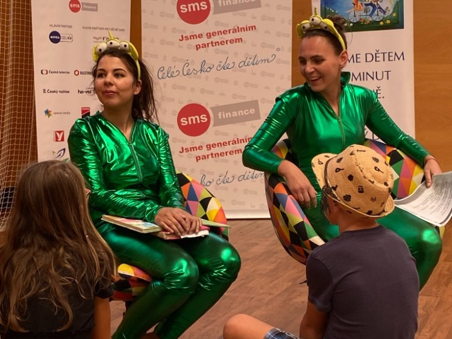

Cestovadélko
Ukázky z představení
Cestovadélko
☰
Domů
Představení
Ukázky
Kontakt
Ukázky z představení
Váš prohlížeč nepodporuje přehrávání videa.
Váš prohlížeč nepodporuje přehrávání videa.
Váš prohlížeč nepodporuje přehrávání videa.
 
Spotify